2023年5月現在，Misskeyには ひらがなの デコ文字しか ないので，ほしい デコ文字を 自分で 作ってみました。全部 登録されたら 嬉しいです。
パブリックドメインなので，自由に 使っていただいて 構いません。
カスタム絵文字の登録名は，ひらがなの デコ文字に「2」が 付いた 名前です。すでに「ヰ、ヱ」が「_wi2、_we2」という 名前で 登録されていたので。
| _a2 | _i2 | _u2 | _e2 | _o2 |
|---|---|---|---|---|
| 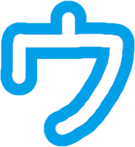 | 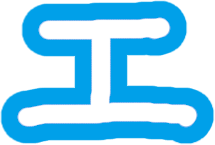 | ||
| _ka2 | _ki2 | _ku2 | _ke2 | _ko2 |
| 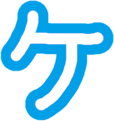 | ||||
| _sa2 | _shi2 | _su2 | _se2 | _so2 |
| _ta2 | _ti2 | _tsu2 | _te2 | _to2 |
| 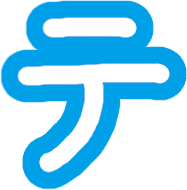 | ||||
| _na2 | _ni2 | _nu2 | _ne2 | _no2 |
| 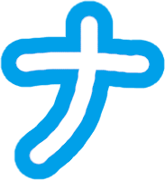 | 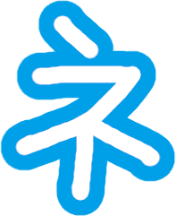 | |||
| _ha2 | _hi2 | _fu2 | _he2 | _ho2 |
| _ma2 | _mi2 | _mu2 | _me2 | _mo2 |
| 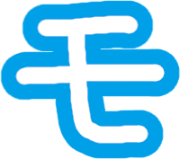 | ||||
| _ya2 | _yu2 | _yo2 | ||
| _ra2 | _ri2 | _ru2 | _re2 | _ro2 |
| _wa2 | _wo2 | |||
| 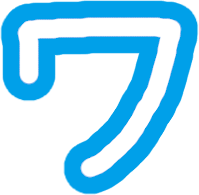 | 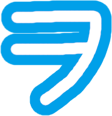 | |||
| _n2 | ||||
| _ga2 | _gi2 | _gu2 | _ge2 | _go2 |
| _za2 | _zi2 | _zu2 | _ze2 | _zo2 |
| _da2 | _di2 | _du2 | _de2 | _do2 |
| _ba2 | _bi2 | _bu2 | _be2 | _bo2 |
| _pa2 | _pi2 | _pu2 | _pe2 | _po2 |
| 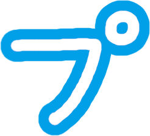 | 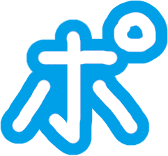 | |||
| _la2 | _li2 | _lu2 | _le2 | _lo2 |
| 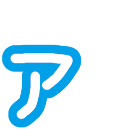 | ||||
| _lya2 | _lyu2 | _lyo2 | ||
| 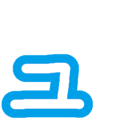 | ||||
| _lwa2 | ||||
| _vu2 | ||||
| 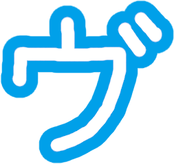 |
GIMP 2.10を 使って，実際に デコ文字を 作る 方法を 紹介します。
例: 拡張かナ文字「すｨ」
Patreon Miskistに なれば，カスタム絵文字申請が できるらしいです。
あくまで 申請なので，承認されるか 却下されるかは，担当者次第だと 思います。